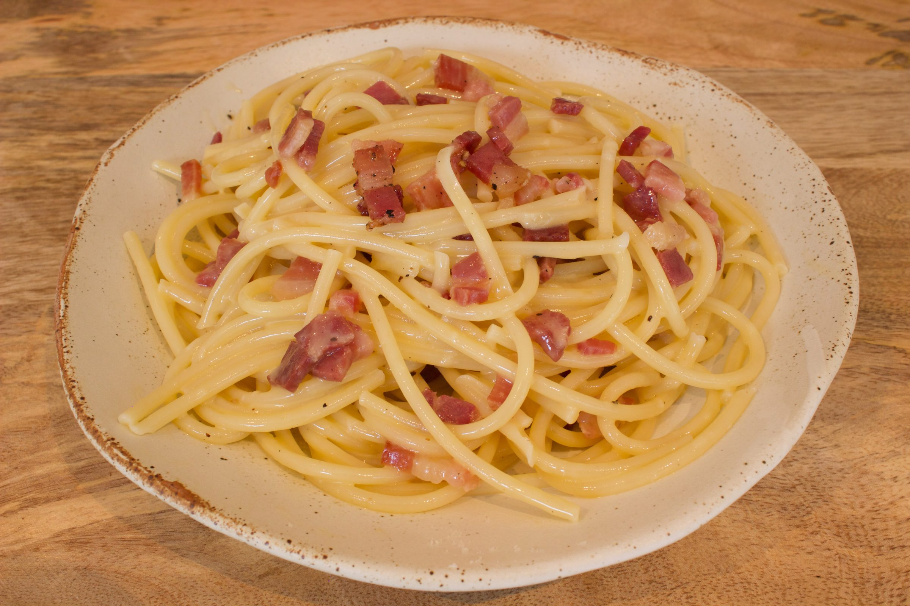

Pasta Carbonara

Description
A classic italian dish. Altough daunting to get right, the steps itself are not that difficult!
Ingredients
- 200g spaghetti
- 3 eggs
- 60g of Pecorino Romano
- 100g of guanciale strips
Steps
- Cook the pasta for as long as the package says, don't forget to add a generous amount of salt to it!
- Put a pan on medium heat and add the guanciale. the fat in the meat will be enough to cook in, if not add a little bit of olive oil.
- In a bowl put 2 egg yolks and 1 hole egg and beat them together, add cheese and a generous amount of pepper. If the mixture is too thick you can add some pasta water.
- Once the pasta is done cooking, add it to the guanciale, stir a bit and then add the egg-cheese mix. Mix this quickly! if its still too thick add little bits of pasta water until right.
Home